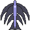
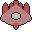
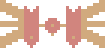

Help
Starship Controls:
Arrow Keys - Change Menu Option (Outside of Game) Move PlayerShip (In-Game)
Enter - Confirm Choice/Exit Current Screen (Outside of Game)
Spacebar - Shoot Bullets (In Game)
Can be held to fire continuously
Ship's Log:
You are the captain of the famous Starship Zero. Light and agile, it usually has no trouble taking on any kind of foe. But you've been ambushed by a notoriously aggressive alien race: The Infinitus. This fiendish species are out to kill, and won't stop until the good ship Zero and all its crew are destroyed.
Mission:
There's only one way to put this: Kill Alien Scum. The Infinitus are persistent, and the ship and its crew are as good as dead already, so put up a fight! Obliterate alien ships until good ol' Zero can't take anymore! Do note: The more you kill, the harder they'll fight...
Your Ship:
This is Starship Zero, your trusty battleship that's taken quite the beating time after time. Your ship will start with a shield tank of 100%, but this will drain quickly against the brutal weaponry the Infitus have. When the ship's shield capacity is at 25% or less the display will flash red warning you that you need health ASAP.
Collectables:
Heart - This heart will replenish your shield tank between 1% and 10%. Luckily the ship has many empty backup tanks, so if the collection of one of these items pushes the tank over the edge, you'll keep the extra.
Power Up - These crazy orbs have the ability to increase your fire power. Collecting one of these will change the colour of your ship and your bullets. The bulets won't do extra damage, but you will fire faster! Your ship can be upgraded a maximum of twice, but luckily these things also charge your shield tank by 10%, so collecting one after powering up twice isn't a waste!
Infinitus Ships:
Battle Pod - The most common type of Infinitus Ship. These ships will shoot you, and the more you kill, the more they'll shoot. Worth 10 points.
Flash Drone - Who needs missiles when you can fly a giant, remote controlled arrowhead into your enemies? These will fly at you. Fast. They won't shoot however - But they will still hurt if they crash into you. Worth 30 points.

War Axe - These ships are brought out only when the Infinitus feel truly threatened. They will lock-on and hit you harder than a Battle Pods gun. These big ships will need more than one hit to take down - They even have a shield to stop too many successive hits. Hardly fair, right? Also, they have two guns. TWO. Worth 100 points.